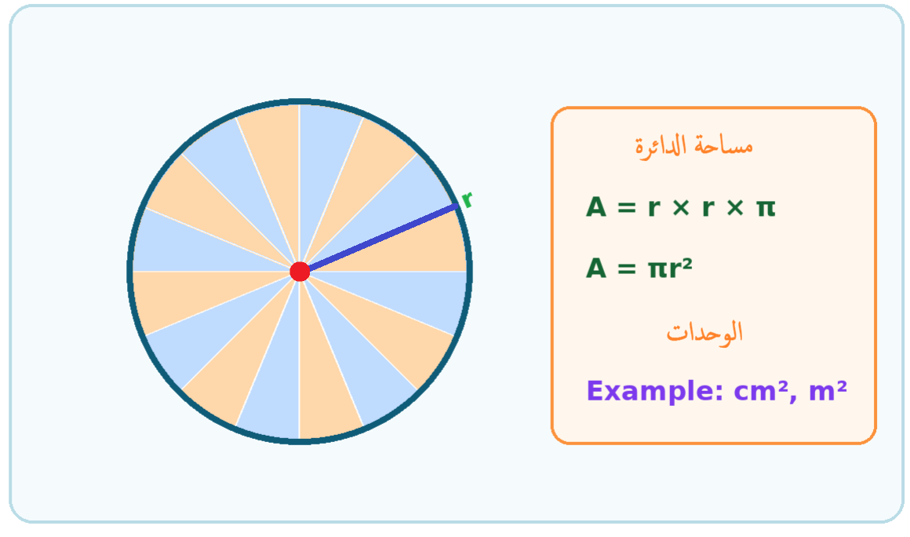
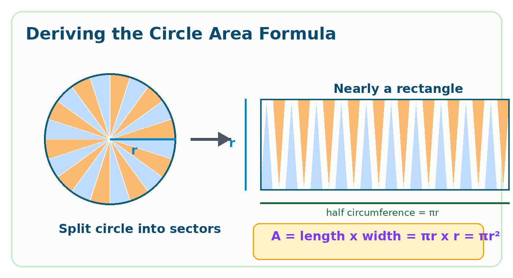
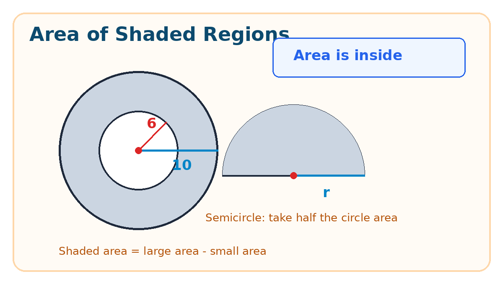

| البند | البيان | البند | البيان |
|---|---|---|---|
| المادة | الرياضيات | الصف | السادس الأساسي |
| الوحدة | السابعة: الهندسة | عنوان الدرس | مساحة الدائرة |
| عدد الحصص المقترح | 4 حصص × 45 دقيقة | المجال | الهندسة والقياس |
| مكان التنفيذ | غرفة الصف/مختبر الحاسوب/اللوح الذكي | نوع التحضير | تحضير محوسب مع ورقة عمل تفاعلية |
| المعلم : زهدي زاهدة | التاريخ: ............ | ||
فكرة الدرس المركزية
يكتشف الطلبة أن مساحة الدائرة هي مقدار المنطقة الداخلية التي تغطيها الدائرة، ثم يستنتجون قانونها من خلال تقسيم الدائرة إلى قطاعات وإعادة ترتيبها في شكل يشبه المستطيل، حيث يكون الطول نصف محيط الدائرة والعرض نصف القطر؛ لذلك م = π × نق².

الأهداف التعليمية السلوكية
أن يميز الطالب بين محيط الدائرة ومساحتها من خلال نموذج بصري وحياتي.
أن يستنتج الطالب قانون مساحة الدائرة من خلال تفكيك الدائرة إلى قطاعات وإعادة ترتيبها.
أن يذكر الطالب قانون مساحة الدائرة: م = نق × نق × π أو م = π نق².
أن يحسب الطالب مساحة دائرة معلومة نصف القطر أو القطر مع كتابة وحدة القياس المربعة.
أن يجد الطالب نصف القطر من المحيط عند الحاجة، ثم يوظف قانون المساحة في مسائل حياتية ومناطق مظللة.
المفاهيم والمصطلحات
| المفهوم | الدلالة التعليمية |
|---|---|
| مساحة الدائرة | عدد الوحدات المربعة التي تغطي المنطقة الداخلية للدائرة. |
| المنطقة الدائرية | الجزء الداخلي المحصور داخل محيط الدائرة. |
| نصف القطر (نق) | قطعة مستقيمة من المركز إلى نقطة على الدائرة، وهو العنصر الأساسي في قانون المساحة. |
| القطر (ق) | قطعة مستقيمة تمر بالمركز، وق = 2 × نق. |
| النسبة التقريبية π | عدد تقريبي يستخدم في قوانين محيط الدائرة ومساحتها، ويساوي تقريباً 3.14 أو 22/7. |
| وحدة المساحة | وحدة مربعة مثل سم² أو م²، لأنها تقيس منطقة لا طولاً فقط. |
| المساحة المظللة | فرق أو مجموع مساحات أشكال هندسية، مثل مساحة دائرة كبرى ناقص مساحة دائرة صغرى. |
التعلم القبلي اللازم
تمييز عناصر الدائرة: المركز، نصف القطر، القطر، المحيط.
معرفة قانون محيط الدائرة: ح = ق × π أو ح = 2 × نق × π.
إدراك مفهوم المساحة ووحدة القياس المربعة.
إيجاد مساحة المستطيل، وربطها بالطول × العرض.
إجراء عمليات الضرب والقسمة والتربيع واستعمال 3.14 أو 22/7.
قراءة المسائل اللفظية وتحديد المعطيات والمطلوب.
نموذج التحضير
| اليوم / التاريخ | الأهداف | المفاهيم الجديدة | التعلم القبلي | الأنشطة والتدريبات | التقويم | التغذية الراجعة |
|---|---|---|---|---|---|---|
| اليوم: ........ التاريخ: ........ |
أن يميز الطالب بين مساحة الدائرة ومحيطها. | مساحة الدائرة، المنطقة الداخلية، وحدة مربعة | مفهوم المحيط، الدائرة، المساحة. | تمهيد بصورة الغربال أو دائرة منتصف ملعب كرة القدم. يناقش الطلبة: هل المطلوب طول الحافة أم تغطية الداخل؟ ثم يظللون المنطقة الدائرية. | سؤال شفوي: عندما نريد تغطية منطقة دائرية ماذا نحسب؟ | تصحيح بصري: الحافة = محيط، الداخل = مساحة، ووحدة المساحة مربعة. |
| اليوم: ........ التاريخ: ........ |
أن يستنتج الطالب قانون مساحة الدائرة عملياً. | نصف محيط الدائرة، قطاعات دائرية، م = π نق² |
مساحة المستطيل، قانون المحيط. | نشاط عملي: تقسيم دائرة ورقية إلى قطاعات، ثم إعادة ترتيبها في شكل يشبه المستطيل. يلاحظ الطلبة أن الطول = نصف المحيط = π نق، والعرض = نق. | أكمل: مساحة الدائرة = نصف المحيط × ........ = ........ | إعادة ربط الشكل الناتج بالمستطيل: الطول × العرض، وليس حفظ القانون فقط. |
| اليوم: ........ التاريخ: ........ |
أن يحسب الطالب مساحة دائرة معلومة نصف القطر أو القطر. | نق²، التعويض، وحدة سم² / م² |
العلاقة ق = 2 نق والتربيع. |
أمثلة متدرجة: نق=8 سم، ق=14 سم. يناقش المعلم اختيار π المناسب وضرورة تحويل القطر إلى نصف قطر. | تدريب فردي: أوجد مساحة دائرة نصف قطرها 5 م، ودائرة قطرها 6 م. | تذكير: عند إعطاء القطر نبدأ بنصفه، وعند المساحة نكتب وحدة مربعة. |
| اليوم: ........ التاريخ: ........ |
أن يوظف الطالب قانون المساحة في مسائل عكسية ومناطق مظللة. | المساحة المظللة، نصف الدائرة، إيجاد نق من ح | قانون المحيط، طرح المساحات. | ورقة عمل محوسبة: مختبر مساحة الدائرة، أسئلة تفاعلية، ومسائل: إيجاد نق من المحيط ثم المساحة، ومساحة منطقة مظللة بين دائرتين. | تصحيح آلي، تذكرة خروج، سلم تقدير عددي. | علاج فوري للأخطاء: الخلط بين 2πنق وπنق²، أو نسيان طرح مساحة الصغرى من الكبرى. |
خطة سير الحصص المقترحة
| الحصة | الزمن | الإجراء التعليمي | دور المعلم | دور الطالب |
|---|---|---|---|---|
| الأولى | 45 دقيقة | تمييز مساحة الدائرة من محيطها من خلال مواقف حياتية وصور. | يعرض أمثلة مثل دائرة الملعب، ويوجه أسئلة تمييزية. | يحدد المنطقة الداخلية ويشرح الفرق بين المساحة والمحيط. |
| الثانية | 45 دقيقة | استنتاج القانون من تفكيك الدائرة إلى قطاعات وإعادة ترتيبها. | يوزع دوائر ورقية/نماذج رقمية ويقود الاستخلاص. | يقص، يرتب، يقارن بالشكل المستطيلي، ويستنتج القانون. |
| الثالثة | 45 دقيقة | تطبيق القانون على دوائر معلومة نق أو ق. | يعرض أمثلة متدرجة ويؤكد وحدة القياس واختيار π. | يعوض في القانون ويحل تدريبات فردية وزوجية. |
| الرابعة | 45 دقيقة | تطبيقات حياتية، مناطق مظللة، ورقة عمل محوسبة وتقويم. | يتابع الأداء ويوفر تغذية راجعة وعلاجاً فورياً. | يحل الأسئلة التفاعلية والورقية ويشارك في التقويم. |
سير الدرس التفصيلي
1. التهيئة والاستعداد
يعرض المعلم صورة غربال أو دائرة مرسومة في وسط ملعب كرة قدم، ويسأل: ما الجزء الذي يمثل مساحة الدائرة؟
يناقش المعلم الفرق بين وضع شريط حول دائرة وبين تغطية سطحها: الأول محيط، والثاني مساحة.
يذكر الطلبة بالعلاقة بين القطر ونصف القطر، وبقانون محيط الدائرة السابق.
2. العرض والاستكشاف
يرسم المعلم دائرة ويقسمها إلى قطاعات متساوية، ثم يبين أن زيادة عدد القطاعات تجعل الشكل الناتج أقرب إلى المستطيل.
تعمل المجموعات على قص دائرة ورقية إلى 16 أو 32 قطاعاً وإعادة ترتيب القطاعات بالتناوب.
يوجه المعلم الطلبة إلى ملاحظة أن قاعدة الشكل الناتج تقارب نصف محيط الدائرة، وأن ارتفاعه يساوي نصف القطر.
يستنتج الطلبة: مساحة الدائرة = نصف المحيط × نصف القطر = π × نق × نق = π نق².

3. التطبيق والتثبيت
مثال 1: دائرة نصف قطرها 8 سم؛ م = 8 × 8 × 3.14 = 200.96 سم².
مثال 2: دائرة قطرها 14 سم؛ نق = 7 سم؛ م = 7 × 7 × 22/7 = 154 سم².
مثال 3: دائرة محيطها 62.8 سم؛ 62.8 = 2 × نق × 3.14، إذن نق = 10 سم، وم = 10 × 10 × 3.14 = 314 سم².
مثال 4: منطقة مظللة بين دائرتين: مساحة المظللة = مساحة الدائرة الكبرى - مساحة الدائرة الصغرى.

4. الإغلاق والتقويم الختامي
يلخص الطلبة: قانون المساحة يعتمد على نصف القطر المضروب في نفسه، وليس على 2 × نصف القطر.
تذكرة خروج: دائرة قطرها 6 م. أوجد مساحتها مستخدماً π = 3.14.
واجب بيتي: حل تمرينات الكتاب الخاصة بمساحة الدائرة والمناطق المظللة.
تثبيت الأهداف بورقة العمل المحوسبة
| الهدف | موضعه في الورقة المحوسبة | دور المعلم |
|---|---|---|
| تمييز المساحة من المحيط | الزر البصري يلون داخل الدائرة ويعرض وحدة سم² مقابل الحافة. | يسأل: هل نعد الداخل أم الحافة؟ |
| استنتاج القانون | قسم إعادة ترتيب القطاعات يوضح أن الطول نصف المحيط والعرض نصف القطر. | يربط الشكل الناتج بقانون مساحة المستطيل. |
| حساب المساحة من نق أو ق | حاسبة تفاعلية: يختار الطالب المعطى: نصف قطر أو قطر. | يتأكد من تحويل القطر إلى نصف قطر قبل التعويض. |
| إيجاد المساحة من المحيط | سؤال تفاعلي يطلب إيجاد نق أولاً ثم المساحة. | يؤكد ترتيب الخطوات: المحيط ← نصف القطر ← المساحة. |
| حساب المساحة المظللة | نموذج دائرتين متحدتي المركز وتطبيق الطرح. | يوجه لطرح مساحة الأصغر من الأكبر وكتابة وحدة مربعة. |
الصعوبات والمفاهيم الخاطئة المتوقعة
| الخطأ أو الصعوبة | إجراء علاجي مقترح |
|---|---|
| الخلط بين قانون المحيط ح = 2 × نق × π وقانون المساحة م = نق² × π. | استخدام نموذج بصري: المحيط حافة فقط، والمساحة داخل الشكل، ومناقشة إجابة خاطئة تشبه: م = 2πنق. |
| استعمال القطر مباشرة في قانون المساحة بدلاً من نصف القطر. | كتابة خطوة إلزامية قبل الحل: نق = ق ÷ 2. |
| نسيان تربيع نصف القطر أو تربيع π بدلاً من نق. | تلوين العاملين المتكررين في القانون: نق × نق × π، وتدريب على أمثلة قصيرة. |
| كتابة وحدة طول مثل سم بدلاً من سم². | تذكير أن المساحة تغطي سطحاً، لذلك وحدتها مربعة. |
| اختيار قيمة π غير مناسبة أو تنفيذ الحسابات بصورة غير دقيقة. | توضيح أن 22/7 يناسب غالباً مضاعفات 7، و3.14 يناسب كثيراً من الأعداد العشرية. |
| إيجاد المساحة من المحيط مباشرة دون إيجاد نصف القطر. | حل المسائل العكسية على مرحلتين واضحتين: أوجد نق، ثم أوجد المساحة. |
| طرح المساحات في المنطقة المظللة بترتيب خاطئ. | رسم سهم: المظللة = الكبيرة - الصغيرة، مع تلوين كل منطقة قبل الحساب. |
أدوات التقويم
1. تقويم قبلي
ما الفرق بين نصف القطر والقطر؟
إذا كان قطر دائرة 12 سم، فما نصف قطرها؟
ما الفرق بين محيط الدائرة ومساحتها؟
2. تقويم تكويني
ملاحظة عمل المجموعات أثناء قص القطاعات وإعادة ترتيبها.
أسئلة شفوية أثناء استنتاج القانون.
حل تدريبات قصيرة بعد كل مثال.
تغذية راجعة فورية من ورقة العمل المحوسبة.
3. تقويم ختامي
ورقة عمل ورقية قصيرة.
مهمة تطبيقية: حساب مساحة منطقة دائرية في ساحة المدرسة أو تصميم ملصق دائري.
سلم تقدير عددي يقيس الاستنتاج، التعويض، حل المسائل العكسية، والمناطق المظللة.
ورقة عمل ورقية - مساحة الدائرة
تعليمات: اكتب القانون أولاً، ثم عوض، ثم اكتب وحدة القياس المناسبة.
1) أكمل: مساحة الدائرة = ............ × ............ × π، ووحدة المساحة تكون ............ .
........................................................................................................................
2) أوجد مساحة دائرة نصف قطرها 8 سم، مستخدماً π = 3.14.
........................................................................................................................
3) أوجد مساحة دائرة قطرها 14 سم، مستخدماً π = 22/7.
........................................................................................................................
4) دائرة محيطها 62.8 سم. أوجد نصف قطرها ثم مساحتها، مستخدماً π = 3.14.
........................................................................................................................
5) أوجد مساحة المنطقة المظللة بين دائرتين متحدتي المركز: نصف قطر الكبرى 10 سم، ونصف قطر الصغرى 6 سم، مستخدماً π = 3.14.
........................................................................................................................
6) نصف دائرة قطرها 10 م. أوجد مساحتها التقريبية مستخدماً π = 3.14.
........................................................................................................................
7) إذا كان نصف قطر دائرة صغيرة 8 سم ونصف قطر دائرة كبيرة 16 سم، فما نسبة مساحة الصغيرة إلى مساحة الكبيرة؟
........................................................................................................................
8) طلبت المعلمة إيجاد مساحة دائرة نصف قطرها 16 سم. كتب طالب: م = 2 × 3.14 × 16. ما الخطأ؟ وما الإجابة الصحيحة؟
........................................................................................................................
إجابة ورقة العمل الورقية
| السؤال | الإجابة النموذجية |
|---|---|
| 1 | نق × نق × π، وحدة مربعة مثل سم² أو م². |
| 2 | م = 8 × 8 × 3.14 = 200.96 سم². |
| 3 | نق = 14 ÷ 2 = 7 سم، م = 7 × 7 × 22/7 = 154 سم². |
| 4 | 62.8 = 2 × نق × 3.14؛ نق = 10 سم؛ م = 10 × 10 × 3.14 = 314 سم². |
| 5 | م الكبرى = 314 سم²، م الصغرى = 113.04 سم²، المظللة = 200.96 سم². |
| 6 | نق = 5 م، مساحة الدائرة = 78.5 م²، نصفها = 39.25 م². |
| 7 | النسبة = 8² : 16² = 64 : 256 = 1 : 4. |
| 8 | الخطأ أنه استخدم قانون المحيط. الصحيح: م = 16 × 16 × 3.14 = 803.84 سم². |
تذكرة خروج مقترحة
| سؤال سريع: دائرة قطرها 6 م. أوجد مساحتها مستخدماً π = 3.14، ثم اكتب لماذا كانت الوحدة م². |
|---|